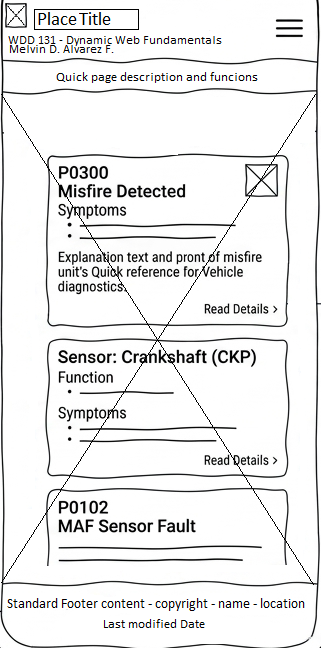
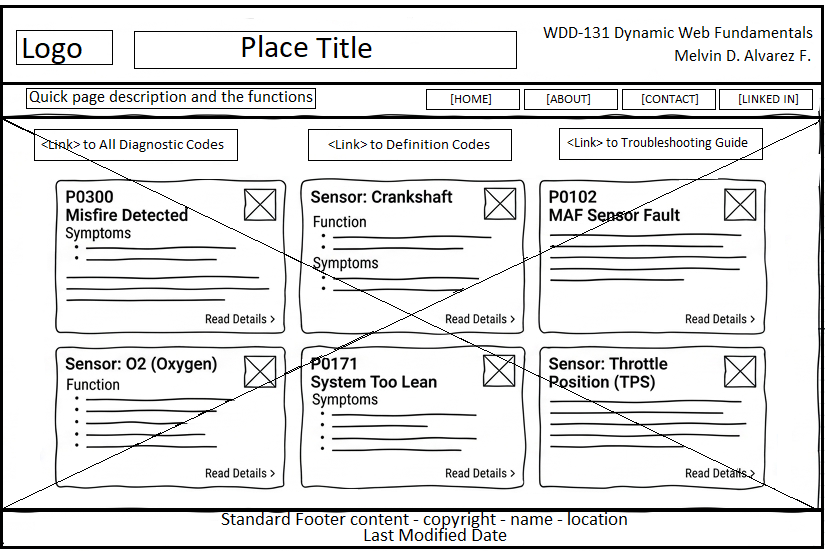

Site Name
Name: OBD-II Quick Diagnostic Guide
Reasoning: This name directly reflects the site's primary function: providing accessible, straightforward vehicle diagnostic information and sensor guides for everyday drivers.
Optional Domain: obd2guide.org
Site Purpose
The site serves as an educational reference hub for car owners and DIY mechanics. It simplifies complex vehicle diagnostic data by explaining common OBD-II trouble codes, engine sensor functions, and step-by-step basic troubleshooting procedures.
Target Audience Scenarios
- Scenario 1: My Check Engine light came on with code P0300. What does it mean and how do I fix it?
- Scenario 2: What is a Crankshaft Position Sensor (CKP) and what symptoms indicate that it is failing?
Color Palette
The color palette focuses on technical clarity and readability:
- Primary Color (#1e293b - Slate Navy): Used for main page headers, navigation bars, and primary text elements.
- Accent Color (#2563eb - Royal Blue): Used for buttons, interactive cards, borders, and active links.
- Background Color (#f4f6f9 - Light Gray): Used for overall page background to ensure contrast and reduce eye strain.
Typography
Primary Font (Headings): Montserrat, sans-serif — Selected for its clean, geometric structure and high visual impact on headers and section titles.
Secondary Font (Body Text): Roboto, sans-serif — Chosen for smooth text flow across desktop and mobile screens.
Wireframes
Mobile Layout View

Desktop Layout View
